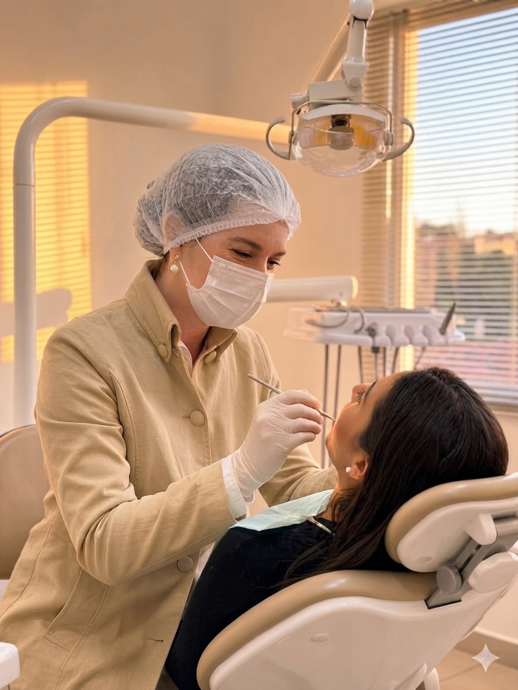
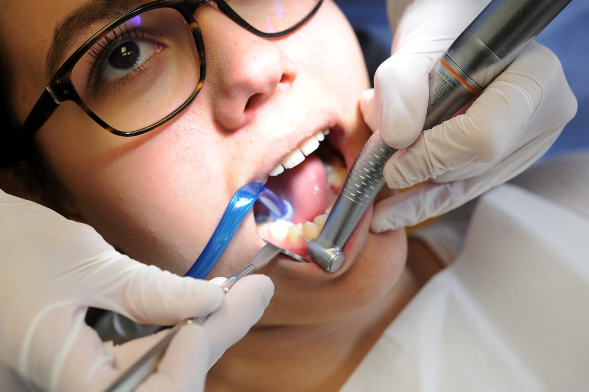
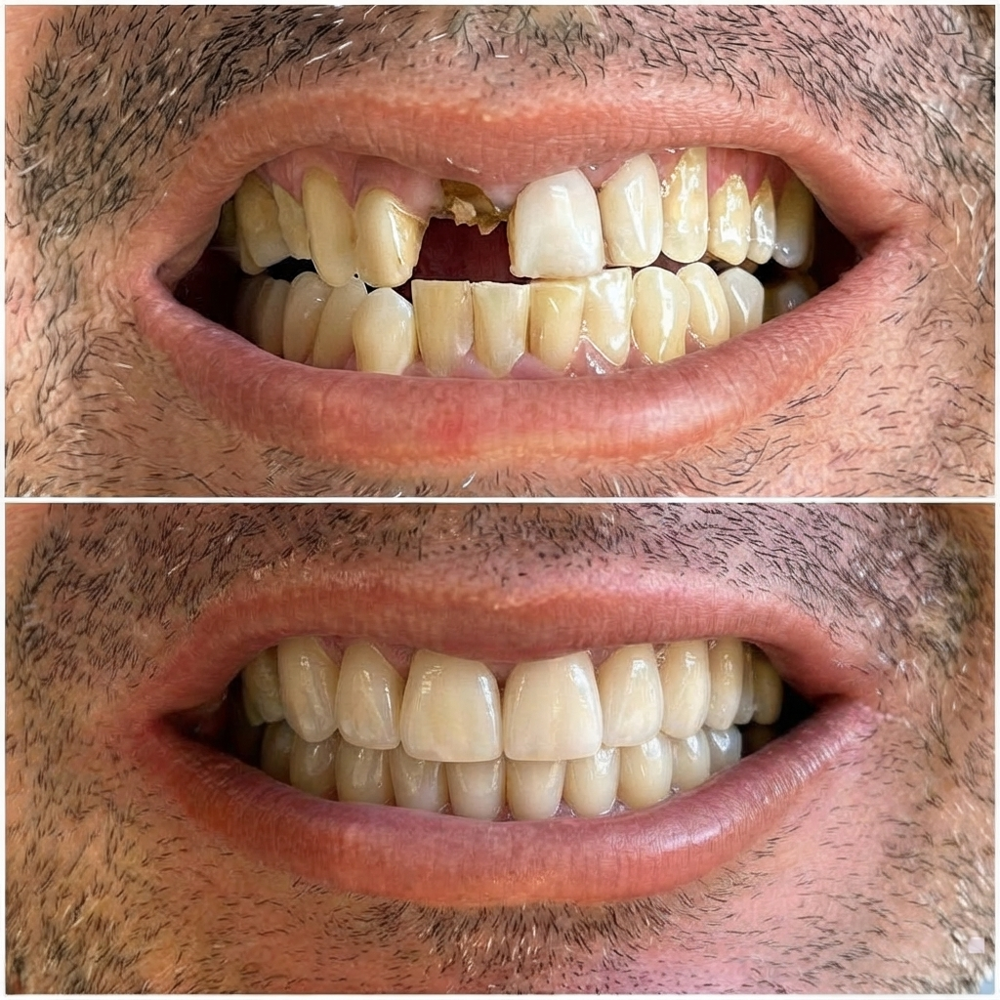
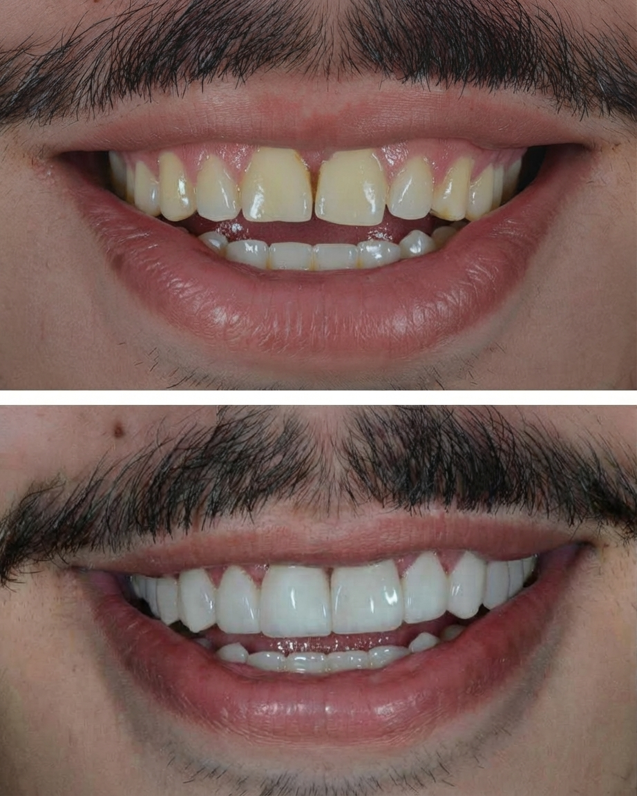
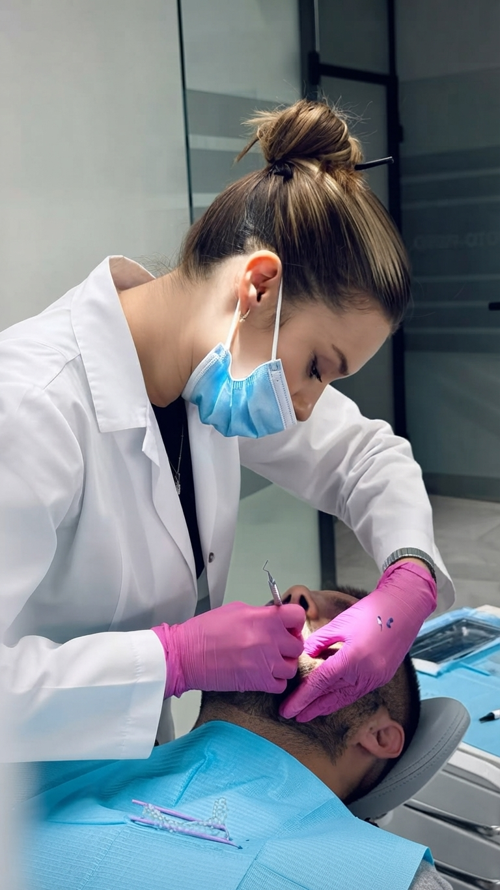

SAÚDE EM PRIMEIRO LUGAR
Clínica geral e prevenção
Consultas, limpeza e orientações para acompanhar a saúde da sua boca em cada fase.
Agende sua avaliação com uma equipe
especializada e atendimento humanizado

✦Você merece entender cada etapa do seu tratamento e se sentir à vontade para perguntar. Aqui, a conversa é o primeiro passo para cuidar do seu sorriso.
Conheça as possibilidades e descubra,
na avaliação, o que faz sentido para você.

Consultas, limpeza e orientações para acompanhar a saúde da sua boca em cada fase.

Avaliação individual para quem busca recuperar dentes perdidos e conforto ao mastigar.

Clareamento e possibilidades estéticas planejadas com atenção à saúde e à naturalidade.

Uma conversa aberta sobre suas dúvidas e receios.
Seu plano de tratamento respeita a sua individualidade.
Imagens ilustrativas. A indicação e os resultados de cada tratamento dependem de avaliação individual.
Conte pelo WhatsApp o que você procura e tire suas primeiras dúvidas.
Conheça as possibilidades de cuidado indicadas para o seu caso.
Entenda as etapas e combine um plano que respeite suas necessidades.
Mantenha a prevenção e o acompanhamento para cuidar da saúde bucal.
Preencha seus dados para preparar uma mensagem. O agendamento será combinado diretamente com a equipe pelo WhatsApp.
Está com receio ou tem alguma dúvida?
Podemos começar só conversando.
Sim. A avaliação é o momento de conversar sobre o que incomoda você e entender quais cuidados podem ser indicados.
Conte à equipe sobre seu receio já no primeiro contato. Você pode tirar dúvidas antes de combinar a consulta.
Converse com a equipe. O orçamento depende do tratamento indicado após a avaliação individual.
Não. A equipe precisa confirmar a disponibilidade e combinar a data e o horário com você pelo WhatsApp.
Avenida Paulista, 1000 · São Paulo, SP
Endereço ilustrativo para esta demonstração.